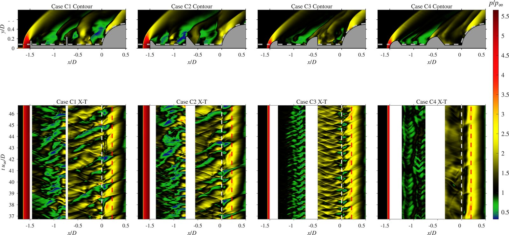

Amity University Uttar Pradesh · B.Tech. Aerospace, 2027
Yash Abhay Gujar
I work on high-speed aerodynamics: shock-wave/boundary-layer interaction, supersonic intake unstart, and aerospike drag reduction — using scale-resolving CFD and hypersonic wind-tunnel schlieren together, rather than one or the other.
- GATE 2026 Aerospace AIR 102
- CGPA 7.93 / 10
- Class rank 4 of 30
- First-author Q1 Physics of Fluids
What I study
A blunt body at supersonic speed carries a strong detached bow shock, and with it heavy wave drag and severe heating. A forward-facing aerospike replaces that single shock with a system of weaker ones — but it buys the drag reduction at the cost of violent, self-sustained unsteadiness driven by an acoustic feedback loop between the shock and the separated shear layer.
Most of my work sits on that trade. I measure it, I try to break the feedback loop without giving back the drag benefit, and I check the answer in two independent ways: detached-eddy simulation on one side, time-resolved schlieren in a Mach 6 Ludwieg tube on the other. The same question — how a shock system and a separated shear layer talk to each other — also drives my work on unstart in mixed-compression intakes.
Selected results
Detached-eddy simulation of a double-disk aerospike on a flat-face cylinder at M∞ = 2.01, run in Ansys Fluent and post-processed through my own MATLAB pipeline.


Journal papers
-
J1
Staged compression and pneumatic buffering in a tandem-disk aerospike at Mach 2.23
-
J2
Passive flow control of a Mach 4 mixed-compression intake using chevron grooves
Published First author -
J3
Robustness analysis of conjugate gradient algorithms in neural-network-based aircraft parameter estimation under measurement uncertainty
Published -
J4
Parametric DES study of double-disk aerospikes: effects of disk position, size and spike length
In preparation First author -
J5
Comparative analysis of neural-network optimization algorithms for aircraft parameter estimation
In preparation -
J6
Real-flight-data validation of a Bayesian-regularization neural network for longitudinal parameter estimation
In preparation
Conference papers
-
C1
Passive suppression of shock unsteadiness over a double-disk aerospike using porous mass bleed at Mach 6
Accepted First author -
C2
Comparative analysis of conjugate gradient algorithms for neural-network-based aircraft parameter estimation
Presented In press -
C3
Numerical investigation of unsteady flow dynamics over double-disk aerospikes at Mach 2.0
Accepted -
C4
Upward-chevron groove modifications for passive control of SBLI in a Mach 4 supersonic intake
Presented First author
Research positions
Mechanical & Aerospace Engineering · Advisor: Prof. S. K. Karthick · on site May–Jul 2026, remote since
- DES of a 2D axisymmetric double-disk aerospike at M∞ = 2.01 in Ansys Fluent. The spiked-hemisphere baseline gave CD = 0.410 against 0.43 measured by Sahoo et al. (AIAA J. 58, 2020), and recovered the −5/3 decay in the pressure-fluctuation spectrum.
- Disk-shape study across four topologies: a flat-cone double disk cut mean CD from 0.410 to 0.225, but raised the fluctuation amplitude (±1σ 0.059 → 0.104) as the shallow inter-disk cavity let the two recirculation zones intermix.
- Mach 6 Ludwieg-tunnel campaign (P₀ = 5.5 bar) on a modular porous double-disk aerospike. Perforating the disks produced an intermediate recompression shock and lowered RMS fluctuation along the shear layer and at reattachment.
- Wrote the MATLAB schlieren pipeline from scratch: Phantom VEO 710L TIFF ingest at 77 kHz, two-pass mean and MAD/RMS statistics on a shared calibration, and FFT/PSD for Strouhal and Rossiter-mode identification.
Advisor: Dr. Neeraj Kumar Gahlot
- Tandem-disk aerospike on a blunt body at Mach 2.23: the vortex trapped between the disks acts as a pneumatic buffer and splits one strong shock into a staircase of weaker compressions. In 3D, payload drag fell 82.8% against the bare body and 42.8% against a single aerospike.
- Chevron-groove modifications for passive SBLI control in a Mach 4 mixed-compression intake, with 2D and 3D compressible RANS (k-ω SST). Upward chevrons collapsed the throat separation bubble by 83% and cut flow distortion by about 30%.
- In progress: unstart mitigation by pressure feedback in a back-pressured intake, taken from RANS to DES; and tangential gas injection for SWBLI control at Mach 2, sweeping injection pressure ratio, injectant temperature and species.
Advisors: Dr. Sanjay Singh, Mr. C. Parvathi Rudesh
- Built the MATLAB feed-forward network framework for aircraft system identification and extraction of stability and control derivatives.
- Benchmarked conjugate-gradient variants and Bayesian regularization for accuracy under measurement noise, validated against HFB-320 flight data. Three papers published or presented, three more in preparation.
How I work
Computational
Ansys Fluent — compressible RANS (k-ω SST), DES/DDES, transient, discrete phase model. Structured hex meshing, y⁺ control and grid-convergence studies. Some OpenFOAM and Tecplot.
Experimental
Mach 6 Ludwieg tube operation, Z-type high-speed schlieren with a Phantom VEO 710L, test-model design, and image-based diagnostics.
Analysis
MATLAB for image processing, FFT/PSD, and spectral mode identification — pipelines I write and maintain myself. Also Python, C/C++, Simulink, Origin, LaTeX.
Recognition
Best Industry Internship, Amity Corporate Meet 2026, for the DDES work at IIT Hyderabad. NPTEL axial-flow compressor and launch-vehicle design courses (latter in the top 5%).
What I am looking for
January – May 2027: a five-month final-semester research project in a high-speed aerodynamics or propulsion group. My seventh semester ends in early December and the final semester carries no coursework, so I can work full time.
From Fall 2027: a PhD, or a research master's leading to one, in high-speed aerodynamics — intake and isolator flows, aerospike and blunt-body aerothermodynamics, shock-induced unsteadiness, or turbomachinery passage aerodynamics. I am equally happy on the experimental and computational sides and would rather do both.